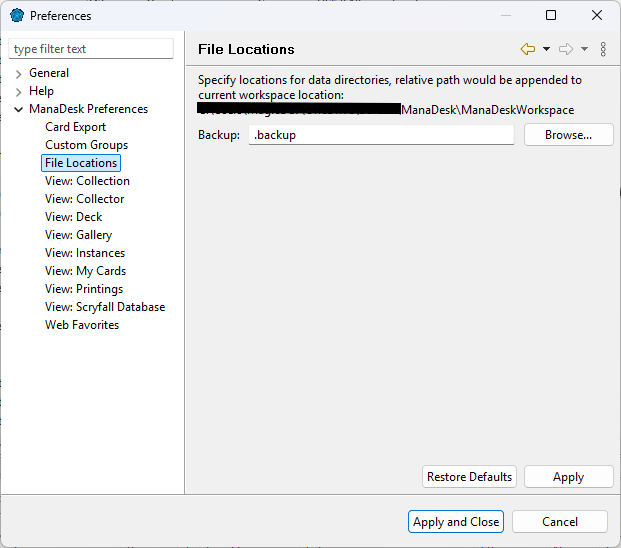

The workspace is the folder where ManaDesk keeps everything that is yours. By default it is
ManaDeskWorkspace in your home folder.
| Folder | Contents | Importance |
|---|---|---|
magiccards | Your decks and collections (Decks, Collections), your
export formats and settings, and the card database (MagicDBScry). | Essential — this is your collection. |
.backup | The backups (see Backups). | Useful. |
.metadata | Window layout, cached card images, logs. | Not needed: ManaDesk rebuilds it. |
Each deck and collection is one file, so you can see them in your file explorer. Don't edit them while ManaDesk is running.
At startup, ManaDesk asks which workspace to use (unless you turned that off). To switch to another workspace, or to move yours:
If the dialog doesn't show anymore, turn Show workspace selection dialog at startup back on in .
sets where the
backups are written (by default, .backup in the workspace).

See also: Backups · Cloud sync